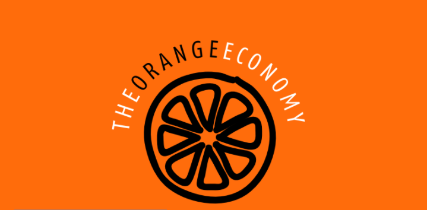

Si la Economía Naranja fuera un país, sería la cuarta economía mundial detrás de Estados Unidos, China y Japón
El comercio de bienes creativos es denominado economia Naranja. Se puede hacer una distinción entre bienes creativos (artes visuales y performativas, artesanías; audiovisual, diseño, nuevos medios, etc.) y servicios creativos (arquitectura, cultura y recreación, investigación y desarrollo, publicidad, etc). Las exportaciones de ambos alcanzaron en 2011 los 646 mil millones de dólares; pero los servicios crecieron un 70% más rápido que los bienes ya que, cada vez más, estas transacciones se hacen por Internet.
Esta economia es menos volátil que el de los commodities o materias primas. Prueba de ello es que soportó mejor la crisis financiera global que sectores como el petrolero. Mientras que las ventas de la Organización de Países Exportadores de Petróleo (OPEP) registraron una caída del 40% en 2009, las exportaciones de bienes y servicios creativos apenas se contrajeron un 12%.
si la Economía Naranja fuera un país, sería la cuarta economía mundial detrás de Estados Unidos, China y Japón; el noveno mayor exportador; y la cuarta fuerza laboral con 144 millones de trabajadores.
Esta economia es menos volátil que el de los commodities o materias primas. Prueba de ello es que soportó mejor la crisis financiera global que sectores como el petrolero. Mientras que las ventas de la Organización de Países Exportadores de Petróleo (OPEP) registraron una caída del 40% en 2009, las exportaciones de bienes y servicios creativos apenas se contrajeron un 12%.
si la Economía Naranja fuera un país, sería la cuarta economía mundial detrás de Estados Unidos, China y Japón; el noveno mayor exportador; y la cuarta fuerza laboral con 144 millones de trabajadores.
Compartir en vez de poseer.
Consumo colaborativo para
cambiar el mundo.
Nuestro propio modelo de conectar múltiples nodos completos que comparten valor a través de una red abierta sin un punto central de control, donde usted como usuario puede gestionar sus propios intereses de dar a conocer su producto en nuevos mercados extranjeros y al tiempo ver la oferta de determinado producto que le interese adquirir.
Beneficiese de nuestra red comercial.
Que es?
Se define como una interacción entre dos o más sujetos, para satisfacer una necesidad, a una o más personas.
Ventajas
Actualmente, las posibilidades para tomar parte en la economía colaborativa son innumerables. Estas son algunas de las principales.
- Menos dinero: los productos o servicios que se ofrecen en este tipo de plataformas tienen un coste menor que los adquiridos o contratados de manera tradicional.
- Más para elegir: los consumidores tienen acceso a alternativas que, de no haber sido por las plataformas de economía colaborativa, no habrían tenido cabida para ellos.
- El ‘human factor’: la economía colaborativa aviva las relaciones sociales, el diálogo y la solidaridad.